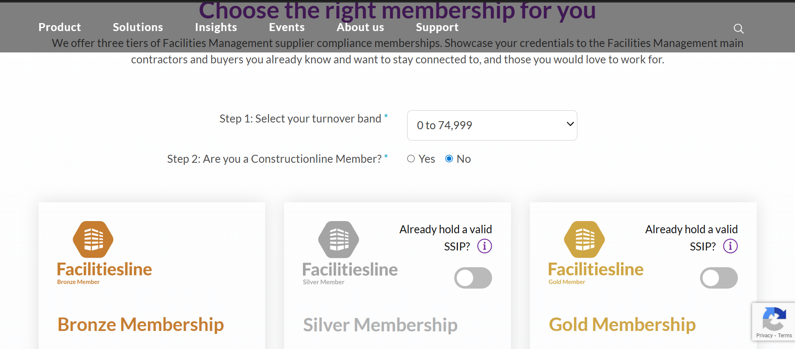

Constructionline and Facilitiesline
Full Stack Developer - Contract
Built a multi-variable interactive pricing configurator for Constructionline and Facilitiesline, deployed across three separate product pages. The tool guides users through selecting their turnover band, membership status and SSIP certification, dynamically calculating and displaying the correct price from hundreds of possible combinations, entirely client side with no page reloads. Each of the silver and gold pricing cards also features an independent SSIP discount toggle, requiring careful state management across multiple simultaneous inputs. Also developed the expandable full-plan comparison matrix displayed beneath the pricing cards. The component was architected to be reusable and configurable across different product lines, each with different pricing data sets and input variations.